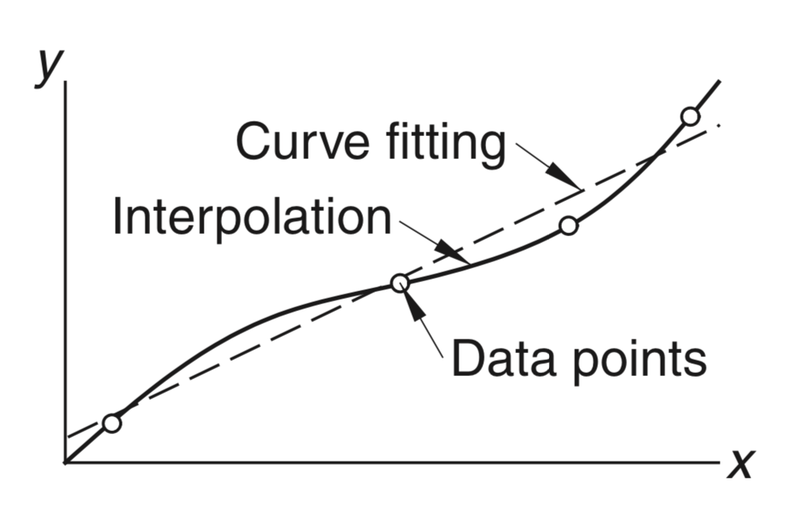

Motivation
- We often want to analyze data points in the form shown below, where we have some dependent variables yi corresponding to some independent variables xi.
- The goal is to find a function f(x) that either
- passes through all the points exactly (interpolation)
- approximates data in a “best” possible way but not exactly (curve fitting)

Image from Kiusalaas, chap. 3.
How interpolation and curve-fitting are useful?
- If we can find a function f(x) that interpolates or approximates the data well,
- We can try to predict new data points (xk,yk).
- We can better understand the underlying process that might have generated the data.
Polynomial interpolation
- The simplest form of interpolation function is a polynomial function.
- It is always possible to construct a polynomial P(x) of degree n that passes through n+1 data points.

Lagrange’s method
-
Suppose we have a dataset of n+1 points:
(x0,y0),(x1,y1),(x2,y2),...,(xn,yn)
-
We construct an interpolation polynomial of degree n, called the Lagrange polynomial, using the formula:
P(x)=c0(x)y0+c1(x)y1+...+cn(x)yn
where ci(x) are called the cardinal functions.
-
The cardinal functions are given by:
ci(x)=(xi−x0)(x−x0)⋯(xi−xi−1)(x−xi−1)⋅(xi−xi+1)(x−xi+1)⋯(xi−xn)(x−xn)=j=0j=i∏n(xi−xj)(x−xj)
- Numerator contains all terms except (x−xi)
- Denominator contains all terms except (xi−xi)
Claim: P(x) passes through each data point
If P(x) passes through all points (xi,yi), then we must have:
P(xi)=yi
Let’s see if this is true for the Lagrange polynomial we just found.
In the above equation for ci(x), setting x=xi and x=xj, i=j, we have
ci(xi)=j=0j=i∏n(xi−xj)(xi−xj)=1
and
ci(xj)=j=0j=i∏n(xi−xj)(xj−xj)=0 , j=i
Now, using the equation of P(x) for x=xi:
P(xi)=c0(xi)y0=0=yi+...+ci(xi)yi+...+1⋅yi+...+cn(xi)yn+...+0
Lagrange polynomial — Example
Consider the following dataset. We have 4 data points so the degree of the Lagrange polynomial P(x) will be n=3.
We first write 4 cardinal functions corresponding to these 4 data points using x-values.
c0(x) c1(x) c2(x) c3(x) = (0−10)(x−10)⋅(0−20)(x−20)⋅(0−30)(x−30) = 6000−1x3+1001x2−6011x+1= (10−0)(x−0)⋅(10−20)(x−20)⋅(10−30)(x−30) = 20001x3−401x2+103x= (20−0)(x−0)⋅(20−10)(x−10)⋅(20−30)(x−30) = 2000−1x3+501x2−203x= (30−0)(x−0)⋅(30−10)(x−10)⋅(30−20)(x−20) = 60001x3−2001x2+301x
We then use these four cardinal functions along with the y-values yi in the equation of P(x):
P(x)=c0(x)y0+c1(x)y1+...+cn(x)yn=−x2+35x−250
Download file lagrange_polynomial.py from Ed to plot these points and the interpolation function to check if it works.
Curve fitting
- If data is obtained experimentally, there could be random noise present due to measurement errors.
- Interpolation would not be a good choice as it would fit all data points including noise as well.
- Instead, we use curve fitting, to find a smooth curve that fits the “average” of the data points, and that is less affected by the noise or “outlier” points.
Linear regression
-
Linear regression is a simpler case of curve fitting where a straight line is found that fits a set of data points.
-
Unlike interpolation, the line need not pass through the points.

-
Linear regression line is given by f(x)=ax+b,
where a is the slope of the line, and b is the y-intercept.
-
The main task will be to find a and b such that the line “fits” the data points in the “best” possible way.
How to determine the “best” fit?
-
To know how good a line fits the given data points, we compute error for each data point.
-
Error is defined as the squared difference between the actual y-value yi and the y-value given by the regression line, f(xi).
-
The total error E for all data points is given by
E(a,b)=i=0∑n(yi−f(xi))2=i=0∑n(yi−(axi+b))2
-
One way to define “best” fit:
- Given all the data points (xi,yi), we want to find a line (i.e. find a and b) such that the error E(a,b) is minimized.
-
To find a and b that minimize E(a,b), we calculate the partial derivatives of E with respect to a and b:
∂a∂E=0,∂b∂E=0
Calculating the partial derivatives
∂a∂E=i=0∑n2(yi−(axi+b))(−xi)
∂b∂E=i=0∑n2(yi−(axi+b))
Setting above derivatives to 0 and solving for a and b,
a=∑(xi−xˉ)2∑(xi−xˉ)(yi−yˉ)
b=yˉ−axˉ
where xˉ and yˉ are the averages of x-values and y-values of data points.
Finally, using these a and b, we get the desired best-fit line as f(x)=ax+b. Here a is slope of the line and b is the y-intercept.
Download linear_regression.py from Ed, which plots data and regression line.